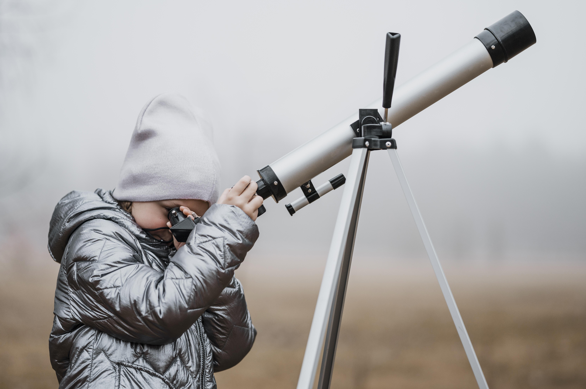

Navigation cosmique
L'astronomie c'est quoi ?
L’astronomie est l’étude des objets célestes comme les étoiles, les planètes, les galaxies, et tout ce qui se trouve dans l’univers. Depuis la nuit des temps, les humains observent le ciel pour comprendre où nous sommes dans l’immensité de l’espace.
Grâce aux télescopes modernes, on peut explorer des mondes lointains, découvrir des exoplanètes et même étudier la naissance des étoiles. L’astronomie nous aide à mieux comprendre l’origine de l’univers, son évolution, et les lois qui régissent les astres.
Chaque nuit, le ciel nous offre un spectacle fascinant, rappelant que nous faisons partie d’un cosmos immense et mystérieux, toujours prêt à être découvert.

Les planètes du système solaire
- Mercure : la plus proche du Soleil, très chaude le jour et glaciale la nuit.
- Vénus : recouverte de nuages épais, elle est surnommée "l’étoile du berger".
- Terre : notre planète, la seule connue à abriter la vie.
- Mars : la planète rouge, cible de nombreuses missions spatiales.
- Jupiter : la plus grande, célèbre pour sa Grande Tache Rouge.
- Saturne : connue pour ses magnifiques anneaux.
- Uranus : une géante glacée qui tourne sur le côté.
- Neptune : la plus éloignée, bleue et venteuse.
Les télescopes
Les télescopes sont des instruments qui permettent d’observer les astres lointains. Il existe des télescopes optiques, radio, et même spatiaux comme Hubble. Ils ont révolutionné notre compréhension de l’univers.
Phénomènes célestes fascinants
- Éclipses : lorsque la Lune ou le Soleil est caché par un autre astre.
- Comètes : boules de glace et de poussière qui traversent le ciel.
- Pluies d’étoiles filantes : des météores qui brûlent dans l’atmosphère.
Le saviez-vous ?
- La lumière du Soleil met environ 8 minutes pour arriver jusqu’à la Terre.
- Il existe plus de 100 milliards de galaxies dans l’univers observable.
- La première photo d’un trou noir a été prise en 2019.
- Sur Jupiter, une journée dure seulement 10 heures.